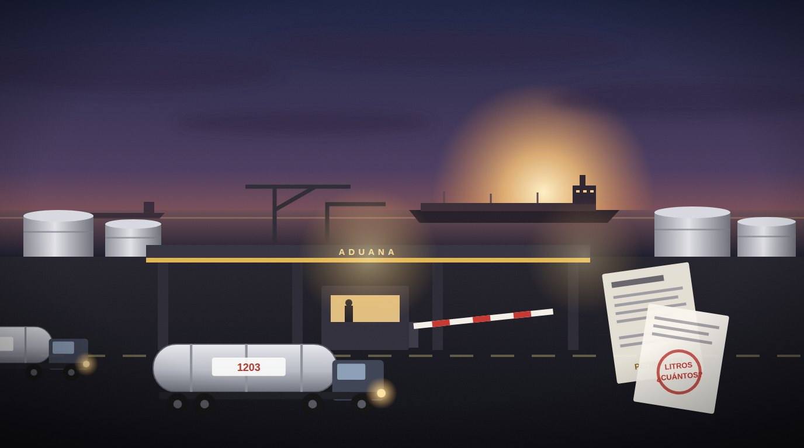
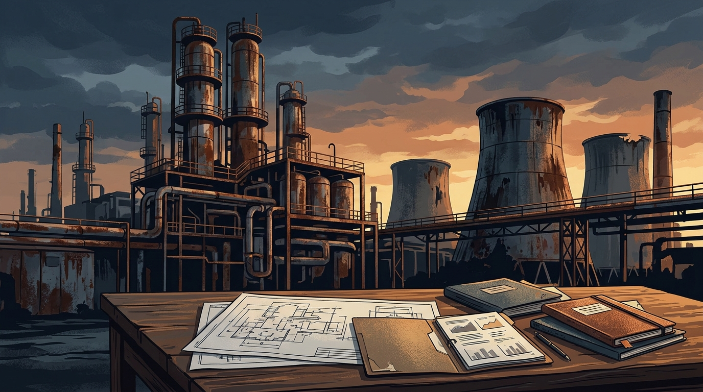
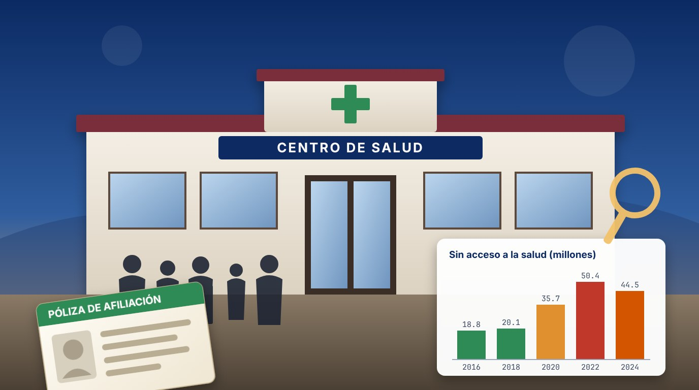

Auditoría en imágenes
Las investigaciones de la portada, contadas con imágenes: cada una abre su página y, si la Auditoría Superior la revisó, su expediente.
Imagen ilustrativaPregúntale al Auditor · Modo InspectorExpedientes de casos de la ASF
Las 23 investigaciones de la portada, cada una con su página: el dinero paso a paso, quién interviene y qué falta saber, con cada cifra y su documento. 6 de ellas tienen expediente de la Auditoría Superior en el capítulo anterior; las otras se arman con el Presupuesto, la Ley de Ingresos y la Cuenta Pública.
 Ilustración generada con IA🚅 Megaobra ferroviaria · FONATUR y Tren Maya
Ilustración generada con IA🚅 Megaobra ferroviaria · FONATUR y Tren MayaTren Maya
¿Cuánto dinero del Tren Maya sigue sin aclararse, y en qué tramos de la vía?
📖 Ver la investigación 📂 Su expediente de la ASF 📰 Pregúntale al Periodista
 Ilustración generada con IA🏭 Refinación · Pemex, Paraíso, Tabasco
Ilustración generada con IA🏭 Refinación · Pemex, Paraíso, TabascoRefinería Olmeca (Dos Bocas)
¿Qué encontraron los auditores cuando revisaron la refinería obra por obra?
📖 Ver la investigación 📂 Su expediente de la ASF 📰 Pregúntale al Periodista
 Ilustración generada con IA🏛️ Costo financiero de la deuda · PEF 2026
Ilustración generada con IA🏛️ Costo financiero de la deuda · PEF 2026Los intereses de la deuda pública
¿Cuánto se va cada año solo en pagar los intereses de lo que debe el país?
- Ilustración generada con IA✈️ Infraestructura aeroportuaria · Defensa
Aeropuerto Internacional Felipe Ángeles (AIFA)
¿Qué revisaron los auditores en la obra y en la operación del aeropuerto Felipe Ángeles?
📖 Ver la investigación 📂 Su expediente de la ASF 📰 Pregúntale al Periodista
 Ilustración generada con IA🏥 Gasto federalizado · Ramo 33
Ilustración generada con IA🏥 Gasto federalizado · Ramo 33Ramo 33: el dinero para estados y municipios
¿Cuánto dinero federal llega a tu estado y a tu municipio, y cuánto quedó sin aclarar?
 Imagen ilustrativa🧱 Inversión privada y obra pública · Nuevo León
Imagen ilustrativa🧱 Inversión privada y obra pública · Nuevo LeónCiénega de Flores: el dinero público alrededor de LEGO
¿Cuánto dinero público se mueve alrededor de la fábrica de LEGO en Ciénega de Flores?
📖 Ver la investigación 📂 Su expediente de la ASF 📰 Pregúntale al Periodista
 Imagen ilustrativa🚄 Transporte ferroviario · SICT
Imagen ilustrativa🚄 Transporte ferroviario · SICTTren Interurbano México-Toluca «El Insurgente»
¿Qué quedó sin aclarar en la obra que faltaba para terminar el tren a Toluca?
📖 Ver la investigación 📂 Su expediente de la ASF 📰 Pregúntale al Periodista
 Imagen ilustrativa💊 Almacén de medicamentos · Birmex, Huehuetoca
Imagen ilustrativa💊 Almacén de medicamentos · Birmex, HuehuetocaMegafarmacia del Bienestar (Huehuetoca)
¿Cuánto costó la megafarmacia y qué hallaron los auditores en la empresa pública que reparte las medicinas?
📖 Ver la investigación 📂 Su expediente de la ASF 📰 Pregúntale al Periodista

Ilustración provisional⛽ Evasión en combustibles · IEPS, aduanas y SATHuachicol fiscal: el impuesto que no entra
¿Cuánto impuesto de la gasolina y el diésel está en juego, y qué se sabe de lo que no se paga?
 Ilustración provisional🗳️ Órgano autónomo · Ramo 22, ASF y licitaciones
Ilustración provisional🗳️ Órgano autónomo · Ramo 22, ASF y licitacionesEl INE: su presupuesto, lo auditado y los contratos en revisión
¿Cuánto presupuesto maneja el INE, qué le observó la ASF y qué consta de los contratos bajo revisión?
 Ilustración provisional🚢 Energía y medio ambiente · Guaymas, Sonora y Golfo de California
Ilustración provisional🚢 Energía y medio ambiente · Guaymas, Sonora y Golfo de CaliforniaGuaymas y la Gaceta Parlamentaria: el proyecto de gas y su revisión ambiental
¿Qué consta en la Gaceta Parlamentaria y en documentos oficiales sobre el proyecto de gas en Guaymas y su impacto ambiental?
 Ilustración provisional💊 Contratos de salud · IMSS, IMSS-Bienestar y Birmex
Ilustración provisional💊 Contratos de salud · IMSS, IMSS-Bienestar y BirmexCompras de medicamentos y contratos del sector salud
¿Cuánto contratan en medicinas e insumos el IMSS, IMSS-Bienestar y Birmex, y qué parte se da por adjudicación directa?
 Ilustración provisional🧾 Paquete Económico 2027 · Congreso, deuda y calificación BBB
Ilustración provisional🧾 Paquete Económico 2027 · Congreso, deuda y calificación BBBDiputados aprobó la deuda de 2027: Ley de Ingresos y nota soberana
¿Cuánta deuda autorizó la Cámara de Diputados para 2027, qué cambió en las multas fiscales y qué dijo Hacienda sobre la nota BBB?
 Ilustración provisional🏗️ Inversión pública y rescates · 1988–2024
Ilustración provisional🏗️ Inversión pública y rescates · 1988–2024Inversión en megaobras y rescates: 11 obras, 2 rescates y 6 sexenios
¿Cuánto costaron las 11 megaobras y los 2 rescates de seis sexenios, cuánto pierden al año y dónde se consulta cada obra?

Ilustración provisional🏭 Megaobras y compras de Pemex · Coatzacoalcos, VeracruzPlantas de fertilizantes Agronitrogenados
¿Cuánto costó comprar y rehabilitar las plantas de Agronitrogenados en Pajaritos y qué observó la ASF?
 Ilustración provisional⛏️ Megaobras y compras de Pemex · Baja California Sur y Michoacán
Ilustración provisional⛏️ Megaobras y compras de Pemex · Baja California Sur y MichoacánCompra de Grupo Fertinal
¿Cuánto financió Pemex para comprar Grupo Fertinal y cuánto sigue perdiendo al año su filial de fertilizantes?
 Ilustración provisional🗼 Obras conmemorativas · Paseo de la Reforma, CDMX
Ilustración provisional🗼 Obras conmemorativas · Paseo de la Reforma, CDMXEstela de Luz (Bicentenario)
¿Por qué la Estela de Luz costó más del triple de su contrato original y cuántos pagos improcedentes detectó la ASF?
 Ilustración provisional📡 Seguridad e inteligencia · Plataforma México, CDMX
Ilustración provisional📡 Seguridad e inteligencia · Plataforma México, CDMXEl Búnker de Seguridad de García Luna (SSPC)
¿Cuánto costó el edificio del Búnker de Seguridad en Constituyentes y por qué sigue pendiente el costo de sus sistemas?
 Ilustración provisional🧱 Proyectos cancelados · Atitalaquia y Tula, Hidalgo
Ilustración provisional🧱 Proyectos cancelados · Atitalaquia y Tula, HidalgoRefinería Bicentenario en Tula (Barda Perimetral)
¿En qué se gastaron los $1,127.6 millones de la Refinería Bicentenario en Tula antes de cancelarse en 2014?
 Ilustración provisional💻 Equipamiento educativo · SEP, 2001–2011
Ilustración provisional💻 Equipamiento educativo · SEP, 2001–2011Programa Enciclomedia
¿Cuánto ejerció la SEP en el programa Enciclomedia a lo largo de once años y qué revisó la ASF en siete Cuentas Públicas?
 Ilustración provisional🏦 Rescate financiero · FOBAPROA-IPAB y Ramo 34 (1998–2025)
Ilustración provisional🏦 Rescate financiero · FOBAPROA-IPAB y Ramo 34 (1998–2025)FOBAPROA / IPAB (Rescate Bancario de 1998)
¿Cuánto se ha pagado con impuestos por el rescate bancario FOBAPROA-IPAB y cuánto se sigue debiendo al cierre de 2025?
 Ilustración provisional🛣️ Rescate financiero · FARAC y FONADIN en Banobras (1997–2025)
Ilustración provisional🛣️ Rescate financiero · FARAC y FONADIN en Banobras (1997–2025)FARAC (Rescate Carretero de 1997)
¿Cuánto costó rescatar las 23 autopistas privadas del FARAC en 1997 y qué deuda sigue vigente hoy en el FONADIN?

Ilustración provisional🏥 Salud pública · Seguro Popular, INSABI e IMSS-Bienestar (2004–2024)Seguro Popular: 53.5 millones de afiliados y lo que pasó después
¿A cuántas personas llegó a cubrir el Seguro Popular, cuántas se quedaron sin acceso a la salud después y qué le observó la ASF?